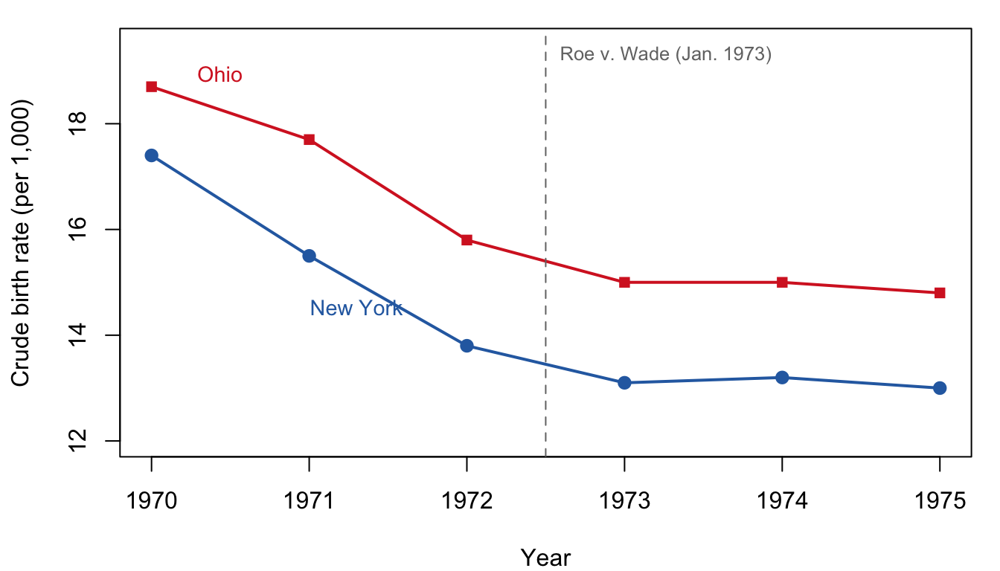

12Fertility Policy II: Abortion and the Pill in the United States
Draft: provenance notes (for review)
Margin tags mark material that is not in the course slides or lab. Added · from readings comes from the assigned readings (Levine et al., Goldin and Katz, the economists’ amicus brief). Added · new is from outside the course materials (my framing, general knowledge, or my own analysis) and needs the closest check. Untagged material follows the 2025 slides (18).
In this chapter. The legal status of abortion in the United States, from Roe v. Wade (1973) to Dobbs v. Jackson Women’s Health (2022), and what it did to births; and how access to the birth control pill changed women’s careers and marriage. Both raise the same hard question as the one-child policy: how can we tell what a policy caused?
Readings this chapter draws on. The economists’ amicus brief in Dobbs v. Jackson Women’s Health (2021); and, for the replication project, Goldin and Katz (2002), “The Power of the Pill,” and Levine, Staiger, Kane, and Zimmerman (1999), “Roe v Wade and American Fertility.”
Added · new Bridge text written for the chapter split.
Chapter 11 asked whether China’s one-child policy reduced fertility, and found that the answer depends on what we think would have happened without it. Fertility was also falling in the United States before Roe v. Wade, so the same problem arises here: to measure what a policy caused, we need a comparison that stands in for the counterfactual. This chapter shows how economists have used differences across states and over time to build one.
12.1 Abortion policy and fertility in the United States
12.1.1 Why the U.S. is special
Added · from readings The amicus brief (pp. 16–19, 23–24) gives similar figures for 2017 and on the women who seek abortions.
Among rich countries, the United States has relatively high fertility. One reason is unwanted births. In a decomposition of fertility shown in lecture (Morgan 2003), the multiplier for unwanted fertility was 1.12 in the United States, compared with 1.04 in Italy. That is, unwanted births raised U.S. fertility by about 12 percent, three times as much as in Italy.
Before Dobbs, abortion was not rare. There were about a million abortions a year, about 20 percent of pregnancies, and an estimated one in four American women had an abortion by age 45. The economists’ amicus brief reports 862,320 abortions in 2017, and that “nearly half of all pregnancies are unintended, and nearly half of these unintended pregnancies end in abortion.” Contraception fails too: the pill fails for about 7 percent of women in their first year of use, mostly through user error.
Who seeks an abortion? We often hear about teenagers. But the typical woman seeking an abortion is an adult (97 percent are over 18), already has a child (59 percent), has low income (75 percent), and has recently experienced a disruptive life event, such as a job loss, a death in the family, or the end of a relationship.
The legal history in brief:
Roe v. Wade (1973) legalized abortion in all states. In recent years there was mounting pressure and reduced access in some states.
Dobbs v. Jackson Women’s Health (2022) overturned Roe and allows states to ban abortion. About 23 states were expected to end up banning it.
Dobbs raises many questions: How will it affect women’s lives? Sexual and contraceptive behavior? The children born from unintended pregnancies? Here we focus on the first and most measurable: how much do abortion bans increase births?
Added · from readings Levine et al. 1999, p. 199.
As Phillip Levine and his coauthors put it a quarter century before Dobbs: “Although positions are largely developed on philosophical and moral grounds, the empirical magnitude of the effect of legal access to abortion is both important and rarely studied.” Economics cannot settle the moral question. It can try to measure the consequences.
This is a causal question, so a simple correlation won’t do. The tool that most of the research uses is difference-in-differences: compare the change in births in places where the policy changed with the change in places where it did not.
Added · from readings Amicus brief, pp. 4–6.
The 154 economists who signed the amicus brief explain the idea:
In their own words
“While many know the familiar mantra that ‘correlation does not necessarily equal causation,’ the field of causal inference focuses precisely on figuring out when correlation does equal causation. … By comparing changes for the treatment group to those for the control group, the difference-in-differences methodology inherently controls for any differences that were present between the two groups, even without the policy change, while simultaneously controlling for other events occurring around the time of the policy change that potentially impacted outcomes for both groups.” (Brief of Amici Curiae Economists, 2021)
12.1.3 Study design 1: early legalization
Roe was not the beginning. Five states (California, New York, Washington, Alaska, and Hawaii) legalized abortion early, in 1969 or 1970. That gives a natural experiment. From 1970 to 1973, abortion was legal in these “repeal states” but not elsewhere. After 1973, it was legal everywhere.
Figure 12.1 shows crude birth rates in New York, an early repeal state, and Ohio, which waited for Roe.
Show the R code
yrs <-1970:1975ny <-c(17.4, 15.5, 13.8, 13.1, 13.2, 13.0)oh <-c(18.7, 17.7, 15.8, 15.0, 15.0, 14.8)op <-par(mar =c(4, 4.2, 1, 1))plot(yrs, ny, type ="o", pch =19, col = col_ny, lwd =2, ylim =c(12, 19.5),xlab ="Year", ylab ="Crude birth rate (per 1,000)")lines(yrs, oh, type ="o", pch =15, col = col_oh, lwd =2)abline(v =1972.5, lty =2, col = col_grey)text(1972.5, 19.3, "Roe v. Wade (Jan. 1973)", pos =4, cex =0.8, col = col_grey)text(1971.3, 14.9, "New York", col = col_ny, pos =1, cex =0.9)text(1970.2, 18.9, "Ohio", col = col_oh, pos =4, cex =0.9)par(op)

Figure 12.1: Crude birth rates (births per 1,000) in New York, which legalized abortion in 1970, and Ohio, where it became legal with Roe v. Wade in 1973. Data: lecture slides.
Both states’ birth rates fell in the early 1970s, so a simple before-and-after comparison in Ohio would wrongly credit Roe with the whole national decline. The difference-in-differences logic asks a sharper question. Did the gap between New York and Ohio shrink after 1973, when Ohio, too, got legal abortion? (Try computing the first and second differences yourself. It’s the fourth “Check your understanding” question.)
Added · from readings Results in this subsection are from Levine et al. 1999, pp. 199–202, Tables 1–3.
Levine and colleagues did this systematically, for all states, controlling for state and year effects, state-specific trends, and economic conditions. They found that birth rates in the repeal states fell by about 4 percent relative to other states in 1971–1973, exactly the years when abortion was legal only there. After Roe, the gap closed. The effects were much larger for some groups: births fell by 12 percent for teenagers, 8 percent for women 35 and older, and 12 percent for non-white women (more than three times the effect for white women).
But 4 percent may be an underestimate, because women could travel. Before Roe, women in Ohio could, and did, go to New York for an abortion, so Ohio is not a clean “untreated” comparison. Levine and colleagues tested this by comparing the repeal states with non-repeal states at different distances. Figure 12.2 shows the result.
Figure 12.2: Distance to legal abortion and its effects. Left: abortion rate in 1976 (per 1,000 women aged 15–44), by distance from the five early ‘repeal’ states. Right: estimated decline in births in repeal states, 1971–73, relative to non-repeal states at each distance (percent). Source: Levine et al. (1999), Tables 2 and 3.
Compared with states more than 750 miles away, where few women would have traveled, births in the repeal states fell by almost 11 percent. That is the better estimate of the full effect of legal access. Even after Roe, access was not uniform. In 1976, 96.8 percent of women in repeal states lived in a county with an abortion provider, compared with only 52–56 percent of women in the distant states.
Writing in 1999, Levine and colleagues even made a forecast. If Roe were replaced by a nationwide ban, births might rise by 11 percent, “perhaps as many as 440 000 additional births per year.” If instead the decision returned the question to the states and the five repeal states kept abortion legal, births in the banning states might rise by about 4.5 percent. “If more states were to keep abortion legal,” they added, “the effect on births probably would be smaller since interstate travel to obtain abortions would increase.”
12.1.4 Study design 2: recent clinic closures
A second natural experiment came from Texas. In 2013, Texas passed HB-2, a law that shut down many of the state’s abortion clinics. Overnight, some women found the nearest clinic much farther away, while others were barely affected. Justice Elena Kagan, during oral arguments in Whole Woman’s Health v. Hellerstedt (2016), called it “almost like the perfect controlled experiment.” Researchers compared counties whose travel distance jumped with counties where it did not:
Fischer, Royer, and White (2018), Texas: an increase in travel distance from 0 to more than 100 miles reduced abortions by about 38 percent and increased births by about 1.9 percent.
Lindo, Myers, Schlosser, and Cunningham (2020), Texas: an increase from 5 to 105 miles reduced abortions by about 30 percent. They argue they lacked the statistical power to identify effects on births.
Venator and Fletcher (2020), Wisconsin: an increase from 0 to 100 miles reduced abortions by about 31 percent and increased births by about 3 percent.
Added · from readings Amicus brief, pp. 26–34. The national figures in the brief differ from the slide’s “8% nationally.” Both come from versions of the Myers et al. model; see the report.
The amicus brief adds that even modest distances matter. An increase of 25 miles reduced abortion rates by 10 percent, and an increase of 50 miles by 18 percent.
Using estimates like these, Caitlin Myers and coauthors forecast what would happen if 23 states banned abortion. In the affected regions, they predicted a 25.5 percent decrease in abortions (about 8 percent nationally). The brief, filed before the decision, reported that bans in those states would increase the travel distance to the nearest provider for 26 million women of childbearing age. In the counties affected, the average distance would rise from 35 miles to 279 miles.
12.1.5 What actually happened (so far)
Forecasts are only as good as their assumptions, and here events surprised the forecasters. Several things were left out of the natural experiments:
travel funds that help women reach distant clinics;
self-managed abortions with pills, including by mail;
congestion at clinics in states where abortion remained legal;
the possibility of a ban on mifepristone, one of the abortion pills.
The result: abortions increased nationally after Dobbs. The forecast that abortions would fall by about 25 percent in banning states (a bit less than 10 percent nationally) appears so far to have been wrong.
But births did rise. A difference-in-differences study by Daniel Dench, Mayra Pineda-Torres, and Caitlin Myers (2023) compares states with total bans to states that protected abortion. It finds fertility in the banning states rising above trend in 2023. The effects show a dose–response pattern: they were larger in states farther from a state where abortion was legal, such as Texas, Mississippi, and Louisiana. The forecast that births would rise by about 2 percent in banning states appears so far to have been right.
12.1.6 Long-term effects
What about the long run? If abortion bans increase births in the short run, there could be compensating effects:
more early unintended births might mean fewer later, intended births;
couples might change their contraceptive use;
people might lower their target family size, to avoid going over it.
One simulation suggests what this could look like. If the rate of unintended births rises, the TFR first spikes, then declines to a new equilibrium that is still higher than before. The decline comes from compensation: fewer intended births.
Added · from readings Amicus brief, pp. 10–15 and 24–25. These are the brief’s characterizations of the studies it cites.
The longer-term effects on women’s lives are harder to measure. In their brief, written to persuade the Court to uphold Roe, the 154 economists summarized studies of the legalization era that found:
legalization, together with laws letting young women obtain abortions without parental consent, reduced teen motherhood by 34 percent and teen marriage by 20 percent;
for young women with an unintended pregnancy, access to abortion raised the probability of finishing college by nearly 20 percentage points and of entering a professional occupation by nearly 40 percentage points;
delaying an unplanned start to motherhood by one year raised hourly wages later in women’s careers by 11 percent.
They also cited the Turnaway Study. It compared women who arrived at a clinic just before its gestational limit and obtained an abortion with women who arrived just after and were turned away. Over the following five years, the women turned away saw a 78 percent increase in past-due debt and an 81 percent increase in negative public financial records such as bankruptcies and evictions.
Not everyone agrees on how much these studies show. The state of Mississippi and other amici, including a group of “240 Women Scholars and Professionals,” argued that it is “so very difficult to untangle” the effects of abortion legalization from everything else changing for women in the 1970s, and criticized individual studies, for example the Turnaway Study’s small sample. The economists’ brief responds to these criticisms point by point. An amicus brief is an argument, not a neutral survey. Read it, and its opponents, as you would any advocate’s case.
12.2 The power of the pill
Added · from readings This section summarizes Goldin and Katz 2002, the replication-project reading. The slides mention it only in announcing the replication project.
The lecture opens with a reminder that Claudia Goldin won the 2023 Nobel Prize in Economics “for having advanced our understanding of women’s labour market outcomes.” This year’s replication project is her paper with Lawrence Katz, “The Power of the Pill.” It is a model of how to make a causal argument about fertility technology with imperfect data.
12.2.1 The puzzle
Two things changed abruptly for American college-educated women born around 1950. First, careers: women were 10 percent of first-year law students in 1970 but 36 percent in 1980. Their share of first-year medical students rose from about 10 to 30 percent over the same decade. Second, marriage: among college graduate women born in 1950, almost half married before age 23, but fewer than 30 percent of those born in 1957 did. Goldin and Katz ask whether the birth control pill, and the legal changes that let young unmarried women get it, caused both.
12.2.2 Two effects of the pill
The pill was approved in 1960 and spread rapidly among married women. But until the late 1960s, young single women generally could not get it without parental consent. (Some got around the law by claiming to be engaged, or to have irregular periods.) Goldin and Katz argue the pill mattered in two ways:
A direct effect. A woman embarking on years of professional education had to choose between abstinence and “considerable uncertainty regarding pregnancy.” The pill, with a failure rate in typical use of 3 percent per year compared with 20 percent for the diaphragm, made career investment far less risky.
An indirect effect through the marriage market. If many people delay marriage, then a woman who postpones marriage to finish law school no longer finds that the best partners have all been taken. The pill created a “thicker” marriage market for career women.
In their own words
“The pill enabled young men and women to put off marriage while not having to put off sex. Sex no longer had to be packaged with commitment devices, many of which encouraged early marriage. Before the pill was widely available, young people devised means to secure commitments that enabled sexual relations. They ‘went steady,’ fraternity men ‘pinned’ coeds, and couples got ‘engaged.’” (Goldin and Katz 2002)
Their simple model has a cost of delaying marriage, an “impatience factor,” that the pill lowers. Women whose career payoff exceeds that cost delay marriage and invest in careers. When the pill lowers the cost, more women do so. The model also shows that not everyone gains: women with poorer labor market prospects may lose out in the marriage market.
12.2.3 The natural experiment
How can one separate the pill from feminism, antidiscrimination laws, and everything else happening around 1970? Goldin and Katz exploit an accident of history. Between 1969 and 1974, almost every state lowered its age of majority to 18 or extended “mature minor” rights. That let young single women obtain the pill without parental consent. These legal changes, they argue, “were not generally motivated by demands for teenage contraception.” Rather, the Vietnam War, and the Twenty-sixth Amendment giving 18-year-olds the vote, drove them. And states changed their laws at different times. So women born in the same year had different access to the pill depending on their state.
Using this variation, Goldin and Katz find that a state law giving minors access to the pill reduced the share of college women married before age 23 by about 2 to 3 percentage points. That is 24–37 percent of the total decline across cohorts. Pill access can also explain much of the increase in college women working as lawyers and doctors: 1.2 to 1.6 percentage points of a 1.7-point increase from 1970 to 1990. Abortion legalization had similar, though less robust, effects.
Goldin and Katz are careful not to overclaim. “No great social movement is caused by a single factor,” they write. And “the pill is not necessary for demographic change”: Japanese women also married later and had fewer children from the 1970s, yet saw little change in economic status, and the pill was not legal in Japan until 1999. But a “virtually foolproof, easy-to-use, and female-controlled contraceptive” seems to have been important for real change in women’s economic position.
12.3 Lessons
Substantive conclusions.
China’s one-child policy probably accelerated an already rapid fertility decline for a few years. Most of China’s decline happened before it, and economic development probably explains China’s low fertility today. Its costs, including coercion, a distorted sex ratio, and rapid aging, were large.
In the United States, legal abortion reduced births by at least 4 percent, and perhaps 11 percent, when it was introduced in the early 1970s. Dobbs has a big effect on women (and men), especially poor women. In banning states, births were forecast to rise by about 2 percent, and so far this appears right. We are unlikely to see a big national rise in fertility, but the long-term consequences for many women could be large.
Methodological conclusions.
Causal inference tries to identify the effect of a single change, such as the closing of abortion clinics or a lower age of majority.
But natural experiments can miss changes that weren’t part of the “experiment,” such as internet prescriptions of abortion pills. That is why the post-Dobbs abortion forecasts went wrong.
We need statistical methods, but also awareness of what we might be leaving out: feedback, reactions, and the difference between the short term and the long term. This is Malthus-like thinking applied to new issues.
12.4 Key ideas
To know what a policy caused, we need a counterfactual. Comparison countries, comparison groups, and natural experiments stand in for it.
Difference-in-differences compares changes in treated and untreated places. Early legalization of abortion in five states reduced births there by about 4 percent, or about 11 percent when travel to legal states is accounted for.
After Dobbs, births rose in banning states as forecast, but abortions did not fall nationally as forecast. Natural experiments can miss new responses, such as pills by mail.
Goldin and Katz use state differences in the age of majority to show that access to the pill delayed marriage and moved women into professional careers.
12.5 Check your understanding
Added · new These questions are new.
New York and Ohio. Using the numbers in Figure 12.1, compute the gap (New York minus Ohio) in each year. Then compute the average gap before and after 1973. What does the “difference in differences” suggest about the effect of Roe on Ohio’s birth rate? What could go wrong with this estimate?
Travel. Explain why comparing repeal states with nearby non-repeal states understates the effect of legalizing abortion. Why is the comparison with states more than 750 miles away more convincing?
Forecasts. Before Dobbs, economists forecast that births in banning states would rise by about 2 percent and that abortions would fall by about 25 percent. The first forecast appears right and the second wrong. How can both be true at once? (Hint: who is likely to be stopped by distance, and who is not?)
The pill’s natural experiment. Goldin and Katz argue that state changes in the age of majority were driven by the Vietnam War, not by demand for contraception. Why does this matter for their argument? Who loses in their marriage market model?
12.6 Further reading
Brief of Amici Curiae Economists in Support of Respondents, Dobbs v. Jackson Women’s Health Organization, No. 19-1392 (2021). As you read: What natural experiments does the brief rely on? What do Mississippi and its amici argue, and how does the brief respond?
Goldin, Claudia, and Lawrence F. Katz. 2002. “The Power of the Pill: Oral Contraceptives and Women’s Career and Marriage Decisions.” Journal of Political Economy 110(4): 730–770. (Replication project.) As you read: Distinguish the direct and indirect effects of the pill, and look at how the authors rule out alternative explanations in Section V.
Levine, Phillip B., Douglas Staiger, Thomas J. Kane, and David J. Zimmerman. 1999. “Roe v Wade and American Fertility.” American Journal of Public Health 89(2): 199–203. (Replication project.) A short, clear example of difference-in-differences. As you read: Why might the 4 percent estimate be too low?